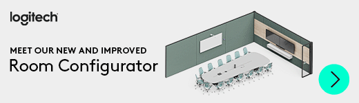

Biber Solutions
by Patrick Biber
Your Partner for Tailored IT Solutions
by Patrick Biber
Your Partner for Tailored IT Solutions
As an IT consultant with extensive experience in supporting large companies, I understand that small and medium-sized enterprises (SMEs) also need access to high-quality IT infrastructure to thrive in today's digital world. For this reason, I offer comprehensive IT services specifically tailored to the needs of SMEs.
Our Services:
- Network Solutions: Building and maintaining stable and secure networks to support your daily business processes.
- NAS Storage: Efficient storage solutions that keep your data secure and accessible at all times.
- Cloud Services: From Office 365 to Kubernetes – I help you leverage the benefits of the cloud for your business.
- Hosting and Virtual Machines: Flexible hosting and VMs that grow with your business needs.
- Linux Support: Special solutions for businesses that rely on the stability and flexibility of Linux.
- Videoconferencing Solutions: Whether Microsoft Teams, Google Meet, or other platforms – I ensure your communication runs smoothly.
- High-Quality IT Equipment: IT solutions usually reserved for large companies, adapted to your budget.
- Rooted in Stäfa: As a company from Stäfa, we are deeply embedded in the community and committed to providing local businesses with top-notch IT infrastructure.
Why work with us?
I value open and direct communication. As your partner and supporter, I am at your side without limiting your freedom. With me, there is no lock-in: I rely on transparent processes and want you to always be able to make free and independent decisions. Through close cooperation with leading providers of cloud services, SaaS solutions, and IT equipment, I can offer you customized and cost-effective IT solutions. My experience as an IT manager at a large company allows me to understand your specific requirements and develop solutions that optimally support your business processes.
Your success is my goal, and we achieve it together through trust, clear, open communication, and tailored IT solutions.
The Perfect Setup for Your Business Control Center
Every business, every creative mind, every workshop, and every craft business is unique – and so should be the IT infrastructure that supports them. We understand that your requirements are individual and therefore offer customized solutions precisely tailored to your needs.
From choosing the best, high-quality components to implementing solutions that meet the highest standards – we only work with partners we fully trust. For the products we recommend to you, we vouch and naturally assume all warranty claims. With our support, your IT control center will not only be reliable and efficient but also a true powerhouse that helps you achieve your creative and business goals.
We Stand by Our Products
We offer you the best advice and warranty services so that you have no stress and can enjoy your device for a long time. Through our partner network, we can offer you these selected products and much more. I am happy to make you an offer.
Secure and Professional Email with ProtonMail
Integrating ProtonMail offers both individuals and businesses secure and encrypted email communication that meets the highest standards of data protection. Known for its end-to-end encryption, ProtonMail protects your sensitive information from unauthorized access and ensures your data remains private.
For businesses, ProtonMail provides not only security but also efficient management of email infrastructure. With user-friendly tools and multi-device synchronization, teams can communicate securely without sacrificing ease of use. Additionally, ProtonMail integrates seamlessly into existing workflows, making it an ideal solution for companies of all sizes.
Individuals benefit from its simple operation and the assurance that their emails are not analyzed for advertising purposes. ProtonMail offers a high level of privacy without compromising functionality.
Overall, integrating ProtonMail is an excellent choice for anyone who values security, privacy, and efficiency in their communication, whether for personal or business use.
If you purchase ProtonMail through this Partner Link, I am happy to answer any questions about installation and usage.

UniFi WiFi Solutions
UniFi WiFi solutions offer an excellent combination of performance, scalability, and user-friendliness. Developed by Ubiquiti, UniFi networks are known for their seamless integration and management. With UniFi, businesses of all sizes can set up a robust and reliable wireless network that meets both current and future requirements.
A key advantage of UniFi is the centralized management console, which allows easy monitoring and control of the entire network. This makes it simple for IT administrators to manage the network, diagnose issues, and perform upgrades when needed. Additionally, UniFi access points are known for their high range and stability, even in demanding environments.
Whether in offices, large buildings, or complex campus networks – UniFi WiFi solutions provide the flexibility and performance needed for modern networks. With UniFi, you can ensure that your wireless network is both secure and future-proof.
Synology Storage Solutions
Synology offers powerful and flexible storage solutions for businesses and creative professionals. With high reliability and extensive features, Synology NAS devices allow efficient management and backup of your data.
Check the Synology NAS Selector.
Eizo EV3450XC FlexScan
Conferencing - Collaboration Without Compromises
With a powerful combination of webcam, microphone, and speakers, the monitor becomes an integrated communication hub. This allows meetings to be conveniently moved to the desk, bridging any distance with the team. For remote collaboration - without additional hardware.
Brilliant colors with precise gradations and stable contrasts from any viewing angle. Made possible by our quality recipe: decades of experience and the best materials. Because nothing is taken for granted, not even a perfect picture.
Top Hardware by Logitech
Logitech Meeting Solutions offer innovative and reliable technologies for video conferencing, designed to meet the needs of modern work environments. With Logitech, you get high-quality audio and video, user-friendly interfaces, and seamless integration with popular video conferencing platforms. Whether for small teams or large corporate meetings, Logitech Meeting Solutions enable efficient and productive meetings, whether your participants are on-site or globally distributed.
Epson EcoTank Printers
Epson EcoTank printers are popular for their low printing costs, environmentally friendly refillable ink tanks, and high print quality. They are easy to use and require less frequent maintenance, making them ideal for high-volume printing in offices and workshops. This combination of efficiency, environmental friendliness, and reliability makes them an excellent choice.
Panasonic Toughbooks
Panasonic Toughbooks are renowned for their exceptional ruggedness and durability. They are designed to withstand extreme conditions such as shocks, water, dust, and extreme temperatures. These laptops are ideal for use in demanding environments, such as field operations, workshops, or emergency services. They also offer long battery life and reliable performance, making them a preferred choice for professionals working in challenging environments.
More information about Panasonic Toughbooks.
Power PDF instead of Adobe Cloud
Power PDF is a powerful software solution for creating, editing, and converting PDFs. It offers an intuitive user interface and versatile features tailored to the needs of businesses and professionals. Power PDF allows you to work efficiently and accurately with PDFs, whether in the office, on the go, or in the home office. This solution is ideal for anyone needing reliable and flexible PDF software. For more information, click here.
Kyocera Copy Center with Service
Kyocera Copy Center offers outstanding printing and copying solutions known for their reliability and durability. These devices are ideal for offices and businesses that rely on high quality and efficiency. Kyocera stands out with low operating costs and environmentally friendly technology, making it a preferred choice for modern businesses.
Custom Workstation
A powerful, custom-built workstation offers numerous benefits, especially for professionals handling complex and resource-intensive tasks. Compared to standard computers, a custom workstation allows the selection of hardware components precisely tailored to a user’s specific requirements. This leads to significantly improved performance and efficiency, whether processing large data sets, rendering high-resolution videos, or developing sophisticated software.
Another major advantage of a custom workstation is the scalability. Since the workstation is individually assembled, it can be easily upgraded to meet future needs. This makes it a long-term investment that can keep up with the growing demands of a business or project.
In addition, custom workstations often offer higher reliability and stability as they are equipped with high-quality, well-matched components. This reduces downtime and increases productivity, as you can rely on the workstation’s performance.
Overall, a powerful custom workstation is an indispensable resource for anyone needing maximum performance, reliability, and flexibility in their work.
Server in the Office or in the Cloud
The choice between an office server or a cloud server depends largely on a company's specific requirements and priorities. An on-site server provides full control over data and systems, which is especially important for companies with strict data protection requirements or those needing high availability. This solution also offers fast access times and can be customized to meet business needs.
On the other hand, cloud servers offer significant advantages in terms of flexibility and scalability. They enable companies to respond quickly to changing needs without investing in expensive hardware. Cloud servers are also accessible from anywhere, which is a major benefit in times of remote work. Additionally, the cloud provider handles maintenance and updates, reducing the internal IT workload.
Whether in the office or in the cloud – the choice of the right server solution depends on your company's specific requirements. Often, a hybrid solution combining the advantages of both approaches can be the best option to ensure both flexibility and control.
Cloud Solutions
Developed by Developers with Seamless, Cost-Efficient Infrastructure Solutions, Driven by Simplicity, Open Communication, and a Network of Top-Notch Cloud Engineers.
At Biber Cloud, we bring your vision to life by providing top-tier infrastructure services designed to make your applications accessible on the web. From robust server infrastructure to comprehensive CI/CD pipelines, we have the expertise and network to ensure your applications are always online and performing optimally.
Founded by an experienced infrastructure engineer with a proven track record in managing large-scale cloud solutions, Biber Cloud is supported by a team of the most talented infrastructure cloud engineers in the industry. Our mission is simple: to equip every developer with the infrastructure needed for success, regardless of the size or complexity of their vision.
Whether you're a startup looking to launch your first application or an established company aiming to optimize its existing infrastructure, Biber Cloud is your trusted partner to bring your digital dreams to life.
Low Costs, Simplicity, and Open Communication
At Biber Cloud, we believe that hosting should be affordable and straightforward without compromising on performance or reliability. Our infrastructure solutions are tailored to meet developers’ exact needs and ensure seamless integration into your projects.
With a focus on simplicity and a network of top-notch infrastructure experts, we deliver systems that work effortlessly so that you can concentrate on what matters most: your code. We value open communication and ensure that you always have a clear and direct line to the support you need.
Join us at Biber Cloud, where simplicity meets excellence in infrastructure.
About Me
Allow me to introduce myself; my name is Patrick Biber.
I live with my wife and our three children in Uerikon, Switzerland, on Lake Zurich.
As a technology enthusiast, I am fascinated by the future and the opportunities new technologies offer to positively change the world. Through my work and travels, I have had the privilege of getting to know different countries and cultures. I have been working in IT for 25 years in various roles with many different companies. The company Biber Network IT has existed since 2008, through which I have been able to realize great and successful projects. I enjoy working in a dedicated team with a shared vision, but I can also take on responsibility independently. I handle stressful situations calmly and always try to maintain my sense of humor. I am convinced that we live in a time full of opportunities, equipped with extraordinary tools.
You can also find me on Linkedin.
I am always happy to hear from you!
Patrick Biber
Hermann Hiltbrunner-Weg 24
8713 Ürikon
map
üìß contact@biber.solutions
üí¨ Signal
 WhatsApp
Threema
WhatsApp
Threemaüì≤ Save Contact